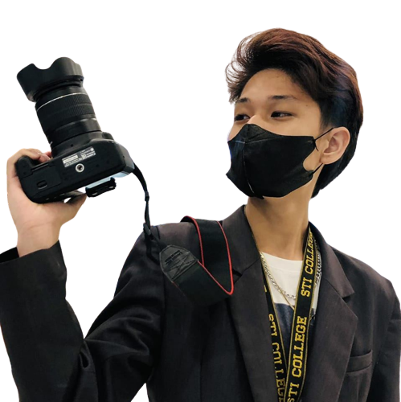

ABOUT ME
Capturing moments, telling stories, and exploring the world through my lens is my true passion. As a Bachelor of Multimedia Arts student at STI College, I've honed my skills and developed a keen eye for detail. This website is my personal space where I showcase my best work and share my photographic journey with you.
Each photograph in this portfolio represents a moment frozen in time, a glimpse into the world as I see it. From breathtaking landscapes to candid portraits, I strive to evoke emotions and spark curiosity through my images. Every click of the shutter is an opportunity to capture the beauty and essence of the subject, whether it's a serene sunset, a bustling cityscape, or a candid smile.
I believe that photography is not just about the technical aspects; it's about connecting with people and sharing stories. With every image I capture, I aim to create an emotional connection and leave a lasting impression. My goal is to transport you to different places, invoke a sense of wonder, and inspire you to see the world through a different lens.
So take a moment to explore my portfolio and immerse yourself in the visual tales I've crafted. Whether you're a fellow photography enthusiast, a potential collaborator, or someone simply seeking inspiration, I hope my work resonates with you. Feel free to reach out for collaborations, inquiries, or simply to share your thoughts.
Thank you for visiting my website. Let's embark on this visual journey together!
~ Carlos Amuro
~ Carlos Amuro